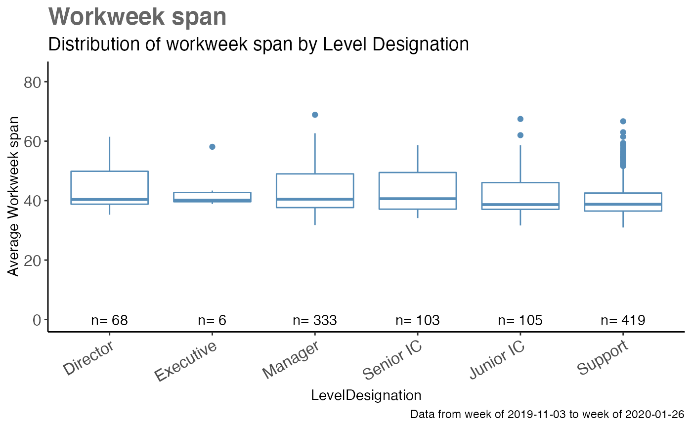
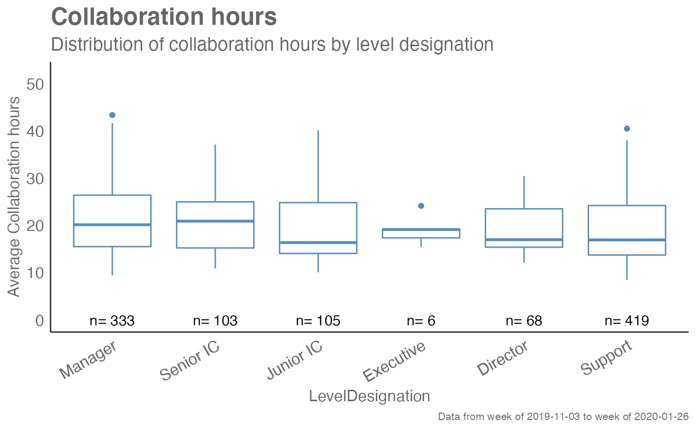

Analyzes a selected metric and returns a a 'fizzy' scatter plot by default. Additional options available to return a table with distribution elements.
create_boxplot( data, metric, hrvar = "Organization", mingroup = 5, return = "plot" )
| data | A Standard Person Query dataset in the form of a data frame. |
|---|---|
| metric | Character string containing the name of the metric, e.g. "Collaboration_hours" |
| hrvar | HR Variable by which to split metrics. Accepts a character vector, defaults to "Organization" but accepts any character vector, e.g. "LevelDesignation" |
| mingroup | Numeric value setting the privacy threshold / minimum group size, defaults to 5. |
| return | Character vector specifying what to return, defaults to "plot". Valid inputs are "plot" and "table". |
This is a general purpose function that powers all the functions in the package that produce box plots.
Other General:
create_bar_asis(),
create_bar(),
create_scatter(),
cut_hour(),
extract_hr(),
hrvar_count(),
identify_outlier()
## Create a fizzy plot for Work Week Span by Level Designation create_boxplot(sq_data, metric = "Workweek_span", hrvar = "LevelDesignation", return = "plot")## Create a summary statistics table for Work Week Span by Organization create_boxplot(sq_data, metric = "Workweek_span", hrvar = "Organization", return = "table")#> # A tibble: 15 x 8 #> group mean median sd min max range n #> <chr> <dbl> <dbl> <dbl> <dbl> <dbl> <dbl> <int> #> 1 Biz Dev 37.2 37.5 2.32 31.6 42.8 11.1 75 #> 2 Customer Service 41.3 39.7 5.80 34.0 57.3 23.3 61 #> 3 Facilities 43.1 39.8 7.73 34.0 59.3 25.4 72 #> 4 Finance-Corporate 39.5 37.2 5.96 32.3 56.1 23.8 68 #> 5 Finance-East 46.3 49.3 8.65 32.7 61.6 28.8 70 #> 6 Finance-South 42.6 39.1 7.92 31.0 58.0 27.1 81 #> 7 Finance-West 44.4 41.3 7.81 33.9 63.0 29.1 73 #> 8 Financial Planning 39.9 38.0 5.80 33.2 55.5 22.3 75 #> 9 G&A Central 43.2 39.4 7.52 33.6 57.7 24.1 57 #> 10 G&A East 38.7 38.6 2.75 32.1 44.1 12.0 65 #> 11 G&A South 41.9 41.1 5.60 33.6 60.9 27.3 76 #> 12 Human Resources 44.0 42.3 5.78 32.7 57.3 24.6 71 #> 13 Inventory Management 47.3 42.4 9.28 34.2 68.9 34.7 60 #> 14 IT-Corporate 42.4 40.5 7.24 31.8 58.5 26.7 68 #> 15 IT-East 40.3 39.9 4.84 32.6 56.4 23.7 62## Create a fizzy plot for Collaboration Hours by Level Designation create_boxplot(sq_data, metric = "Collaboration_hours", hrvar = "LevelDesignation", return = "plot")